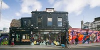

National Botanical Gardens +
This is one of my favourite places in Dublin. So close to the city centre yet very peaceful.
You can stroll for an hour or more through the gardens with features like the vegetable garden,
huge glasshouses and the sensory garden. My favourite spot is sitting on the bench in among the tall grasses,
listening to them rustle in breeze. There are exhibitions there during the year, Sculpture in Context is a highlight.
This features a wide range of mediums from many artists and is Irelands largest outdoor sculpture exhibition.
National Botanical Gardens website
Sculpture in Context 2014 video
Roof Garden, Chester Beatty Library + +
Done with the hustle in the city? Check out this garden on top of the city,
a lovely secret in the centre of Dublin.
It is described as an oasis of peace.
Nestled in the middle of Dublin Castle, overlooking the garden,
it really does provide a bit of me Time in the city.
Chester Beatty Library website
RHA Gallery +
Bright, modern, spacious building with modern Art.
It is just off Stephens Green, on quiet Ely Place, with Coppa Café incorporated.
There are talks, workshops and constantly changing exhibits.
There is always a reason to drop in to this Gallery.
RHA Gallery website
George Bernard Shaw Pub +

This a mixture of social and cultural, with some amazing Street Art out in the back garden.
Evolve Urban Art run Graffiti Jams there, where at least 6 Street Artists, redecorate the walls.
There are also on going exhibitions there, with work on the walls of the interior of the pub.
This is a place to be visited at least once, check out the pizza too!
George Bernard Shaw Pub on Facebook